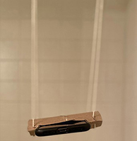

DISCLAIMER - You will be using your phone to take data, and this can sometimes lead to accidents. Please use due care in handling your phone during this experiment.
In this experiment you will be using your phone to measure the acceleration in the x, y, and z axes without gravity. You will build an apparatus and take data. Include a picture of your setup if you can!
While you may be able to achieve a pendulum without them, we recommend using the additional materials as well. This guide will assume that you have them.

Find the cardboard tube from a toilet paper roll and flatten it.
Mark the width of your phone on both sides of the flattened tube.
Make a cut, approximately 4 mm deep, at each mark you made with your phone. Cut from one mark to the other, along the length of the roll, to complete the cutout. Do this on both sides.





Note: I added tape after the second photo to ensure that everything would stay in place.
A period is the time it takes for one cycle in a repeating event or the time for which the event repeats itself. A pendulum at rest is considered to be in equilibrium. Once the pendulum is displaced and then released, it oscillates about the equilibrium position. The time it takes for the pendulum to swing from the release point through an arc to to the opposite point, and then back to the release point, is the period of the pendulum.
You should have determined by now how you will be turning your phone into a pendulum. Typically, when measuring the period of the pendulum, you would measure the angular position as a function of time. Then from those data you would calculate the period of the pendulum.
The pendulum found its first practical timekeeping application with the invention of the pendulum clock by Christiaan Huygens in 1656. Huygens had been inspired by Galileo’s observation that, for small angles of displacement, pendulums of the same length have the same period of oscillation. A type of inverted pendulum is still used in some models of metronome, a device that produces a steady, adjustable beat, which musicians use as a practice aid.
Exercise 1
In this exercise you will measure the length of your pendulum in meters. This would be straightforward in lab, but since we don't have access to a lab it might be a bit more complicated. Below are some tips and ideas to help you accomplish this task.
Figure 13 below shows a front view and a side view of your phone in the cradle. In the front view, the long axis of the phone is coming in and out of the screen, in the side view it is running parallel to the screen.
This distance you want to measure is from the pivot to the center of mass of the phone. This is depicted as .
If you have a measuring tape, use one end at the point of the pivot and then measure straight downward to the center of mass of your phone.
If you do not have a measuring tape but have a ruler, cut a piece of string that you will dangle from the surface of the pivot to your phone in a straight, downward line. Then use a ruler to measure the length of that string.
If you don’t have a ruler of any sort, then we recommend using lined paper. You can look up the spacing for different types of rulings. (If you have an 8-1/2″ × 11″ piece of paper, you might be able to figure out the spacing by, for example, lining up a long edge of the lined paper with the short edge of the 8-1/2″ × 11″ sheet.)
If you do not feel that you can reliably measure the distance between the phone and the pivot, you can measure and the distance from the bottom end of the string to the center of the phone, and use geometry (the Pythagorean theorem) to find . (You can, of course, make the second measurement by measuring the distance between the two strings at the roll end, and dividing by two.) If you do this, we suggest that you keep your string lengths perpendicular to the floor. That is, from the front view, you do not want them flaring out or in, but rather, straight up (parallel).
This should be true in either case. If you measure straight from the pivot to the center of the phone, this does not affect your measurement. If, however, you measure the length , if the strings are not parallel, the length you then calculate for will differ slightly from the actual length.
Regardless your choice in measuring device, make sure that the resolution of the measurement is appropriate.

Question 1
a) What tool did you use to measure the length of your pendulum? b) Write a short description of the procedure you used to measure the length.
Question 2
What is the length of your pendulum in meters? Be sure to include the uncertainty in your measurement. Hint: If you forgot how to get uncertainty from a scale, the information is contained in Lab .
Exercise 2
In this exercise you will use phyphox to collect acceleration data from your phone while it is swinging.

“Good data” is hard to define. You might just try taking a couple of runs to see what type of data come out. You should, however, be able to make some predictions about what good data should look like.
Recall that should look like while should look like . Thus you should hope to see things such as that has roughly half the period of . You should notice that oscillates about , while is almost entirely positive. (Your final axis shouldn’t have much on it.) It is unlikely that you will get perfect data (i.e., exact cosine and sine-squared functions), but you should see these sorts of trends.
Pay attention to the vertical axis scaling on your three plots. They won’t all be the same, so you shouldn’t directly compare your three graphs to each other without first rescaling or noting the difference in scales.
Exercise 3
We want to determine the period, , of the oscillations of motion. We will do so by looking at the oscillatory behavior of the accelerations recorded by the phone in the three different directions. Remember your derivations from Week 1 to determine the relationship between the periods of the accelerations in the different directions and the period of motion of the pendulum.
Question 3
a) How do the periods of the accelerations measured by the phone compare to the period of oscillations of the pendulum?
b) Which axis has the same period as the period of motion?
Question 4
What is the average period of motion? Include 4 decimal places in your measurement.
Remember that the period , is determined by the pendulum length , and the acceleration due to gravity .
Question 5
a) What is the value of from your measurements? Don’t worry about uncertainty.
b) What is the percent discrepancy that you recorded?
In the last exercise, you calculated a value for by using your one data measurement. Up until this point in Physics 3L when we have discussed uncertainty, we have determined it either from a scale or by calculating a standard deviation.
A standard deviation requires multiple measurements of the same value...but you have only one measurement! How can you find the uncertainty in that measurement? Your measurement is the result of a calculation involving values that you measured directly. If you know the uncertainties in those values, then you can calculate how those uncertainties propagate—through the calculation—to give the overall uncertainty in that measurement. Thus, if you know the uncertainties in and you can calculate how they propagate to find the uncertainty in .
Figuring out how uncertainties propagate can get complicated and we won’t provide the techniques in this lab but we will provide the formula for how to calculate the uncertainty in . In the equation below, the uncertainties are denoted with a before the variable and the best estimate is just the variable (e.g. is the uncertainty in the length ).
In the equation above , and are all the measured values. The value for is not measured directly but is calculated from the other two values which are measured directly.
Exercise 4
In this exercise you will calculate how the uncertainties in and propagate, to determine the uncertainty in .
Question 6
What is the period of your pendulum in seconds reported to correct significant figures and with uncertainty?
Question 7
a) Show your work for step 5.
b) Report your value of in to correct significant figures and with uncertainty.
Determining the quality of a non-linear curve fit quantitatively can be very challenging, and is beyond this class.
However, it is possible to analyze a linear fit quantitatively. There are some semi-complicated equations that calculate the uncertainties in the slope and intercept for a linear fit. We won’t worry about the details of those here but will use the LINEST function in google sheets.
LINEST is short for Linear Estimation. It will use the method of least squares to make a best estimate of the line that fits your data.
Below is a video that shows you how to use the LINEST function in Google Sheets as well as how to get the slope, the uncertainty in the slope, the intercept, and the error in the intercept.
Exercise 5
In this exercise you will be submitting your data in a Google form that will be collected into one larger data set with data from all the students in your section. We will then linearize the class data, fit a line to the data, and make a quantitative judgment about the experiment. Submit your data in the form linked in the table below. Make sure that the mass you provide is in kilograms, the length is in meters, and the period is in seconds. Also make sure that you select your correct section!
| Google Form |
|---|
| Link To Form |
Wait until your TA tells you that it is OK to proceed. You’ll need enough submissions to make a usable set of data.
To linearize an equation you must perform a mathematical operation on your equation so that the independent variable is linear—this means that it appears once in the equation and is to the first power. While performing the linearization to the independent variable you track the mathematical operations done to the dependent variable. You then apply those operations to the dependent variable to generate a new equation that is linear.
For this lab is your independent variable and is your dependent variable. If you square both sides of Equation 1 you will have a function that is linear in .
Question 8
Linearize Equation 1. What is the new equation?
Question 9
a) What is the value of the slope? Make sure to include the units and uncertainty.
b) Based on your response in Question 8, what is the theoretical equation of the slope?
Question 10
Using the slope. what is the value of .
Determining the uncertainty in is slightly more complex than just using the uncertainty in the slope provided by LINEST. The slope does not exactly equal , therefore the uncertainties aren’t exactly equal either. To determine the uncertainty you must calculate how it propagates in the calculation you used to find from . The details of this topic will be saved for later. Use the assumption that the uncertainty in —denoted —is related to the uncertainty in the slope——in the following way:
Question 11
a) What is the value you measured for along with the uncertainty?
b) Does the accepted value of fall within your window of uncertainty?
c) Does this strengthen the theory? Why or why not?
Question 12
What is the value of and of the percent discrepancy that you recorded?
Exercise 6
Write a brief conclusion summarizing the important parts of this lab.
Hint: Briefly summarize each exercise. Where/AVOCADO"when" appropriate, include how it fits logically with other exercises. In a couple sentences state your results for your different 's and how they are related.